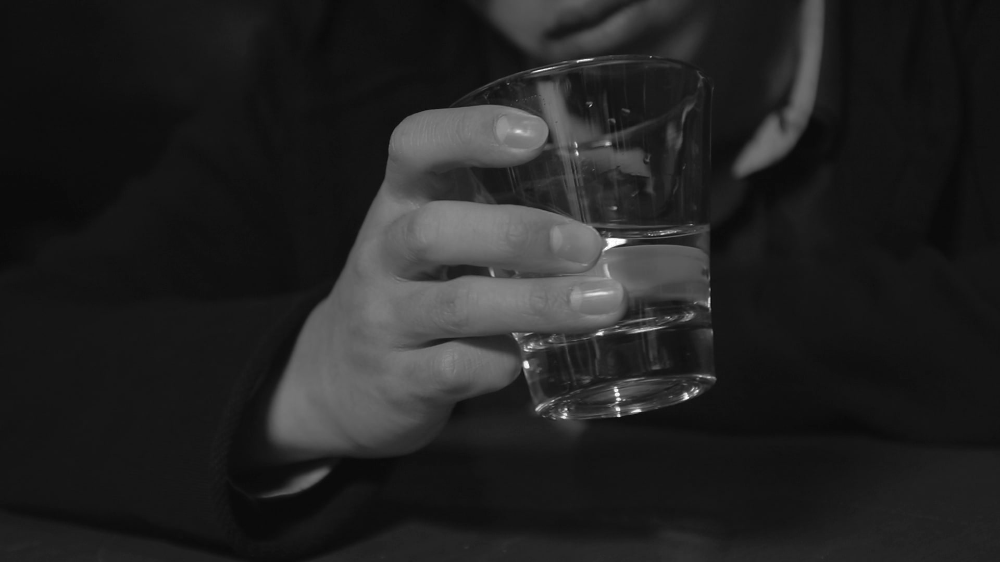

About me
The rain was killing the last days of summer,
you had been killing my last breath of love since along time ago.
About me
I am a second-year student in Simon Fraser University, and this is my first year in SIAT. I was major in environmental science at my first year, however, I felt exhausted and bored when I took environmental courses. I felt SIAT is the program that I really want to get in after I taking several IAT courses. I am an international student from China, after finishing my 10th grade in China, I came to Vancouver to continue my high school. My personality is like a cat, shy, do not talk much and I love to be alone, I choose this picture to represent me because I enjoy seeing ocean, and it inspires me a lot.
About me
I am a second-year student in Simon Fraser University, and this is my first year in SIAT. I was major in environmental science at my first year, however, I felt exhausted and bored when I took environmental courses. I felt SIAT is the program that I really want to get in after I taking several IAT courses. I am an international student from China, after finishing my 10th grade in China, I came to Vancouver to continue my high school. My personality is like a cat, shy, do not talk much and I love to be alone, I choose this picture to represent me because I enjoy seeing ocean, and it inspires me a lot.